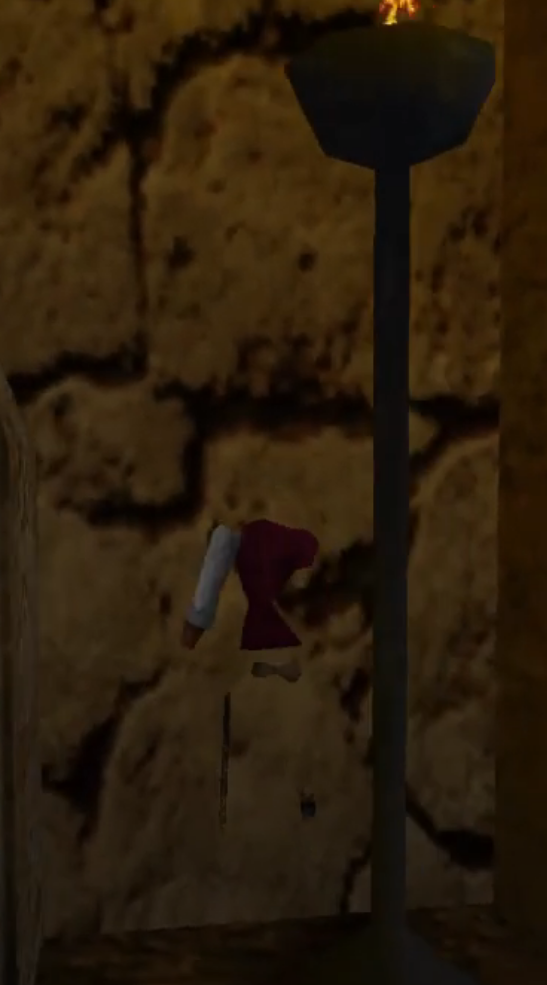
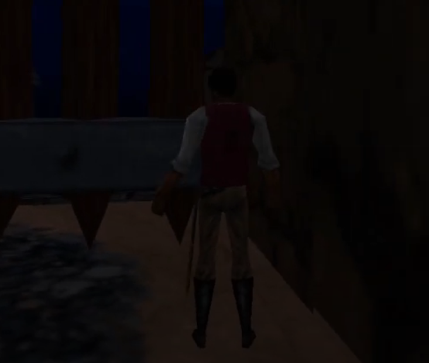

The Elder Scrolls Adventures: Redguard Speedrunning Resources
World Record
Installation
Buy TESA: Redguard [GOG] (better performance than Steam in almost every way after using the enhancement script)
Run this script in the top-level game folder (top-level "Redguard" folder for GOG, "The Elder Scrolls Adventures Redguard" folder for Steam) to set the cycles to 150000 per the speedrun.com rules and enhance the performance of the GOG version.
Controls
Default controls (left) and my preferred controls (right)


Route Outline
This is the outline I used for my run. It includes gold gains/expenditures, maps, optimal dialogue, item usage points, etc.
Solitaan's Redguard Speedrun Details
Cheats
For console-added items, see Cheats.
Glitches
Jump Running - Solitaan (2018)
Chaining running and jumping makes you move about 28% faster vs. regular running.
Teleporter Skip - Solitaan (2018)
There is a cycle of 3 teleporters in Goblin Caverns and normally you must complete the entire dungeon to unlock the last one. However, a very precise jump allows you to escape the cage and skip 14 minutes of the dungeon, including some of the hardest platforming in the game.
Rune Door Clip - Solitaan (2018)
In the Catacombs, you must complete three platform areas to get three runes, which you can then use to solve a puzzle and open a door. It is possible to skip all of that (9 minutes) by clipping through the wall next to the door. This requires the combination of a correct standing position and angle (one compass-tick clockwise from east), then taking out your sword. If the setup is wrong, you may fall out of the map.
Dwarven Ruins Door Clip - zachruns (2023)
In the Dwarven Ruins, there is a door early on which is unlocked after completing most of the dungeon. See this tutorial for how to clip through this door and save about 13 minutes.
Scarab Puzzle Skip - Don Bennett (2002) (Obsolete)
In the Dwarven Ruins, a Scarab puzzle must be solved to open the door to the Pipes area. This puzzle is very finicky and long. A fairly easy jump allows you to get on the sides of the ramp and walk up above the level, where you can jump behind the door and continue.
Canopy Jump/Gate Clip - Solitaan (2018)
During casual play I somehow reached the bottom of the Old Quarter without dying; I later found that you don't take damage if you hit a wall after jumping on a Canopy.
There is also a fairly easy clip at the gate, by getting into the west corner of the gate, facing south, taking 3 steps back, and jumping forward.
The combination of these two tricks allows for more consistency/speed. Either trick would be useless without the other.
N'Gasta Skip - Solitaan (2018)
You can skip the fight with N'Gasta by jumping over the trigger area. This only saves about 1 minute when done optimally.


Fast Rings - Solitaan (2018)
In the Catacombs, typically a lever must be pulled to start the rotation of three large rings. The third ring contains another lever that opens a path to the bottom. It is much easier, and somewhat faster, to leave the rings stationary and instead go through the puzzle in an unintended way.
Original World Record
Social/Community
The Elder Council - Elder Scrolls Speedrunning Discord